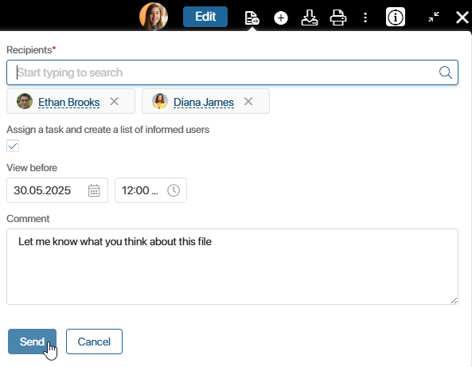
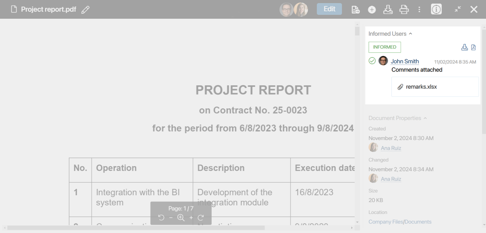
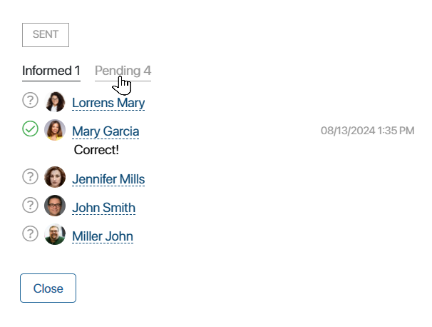
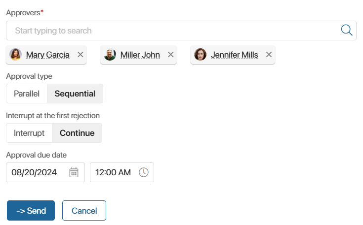
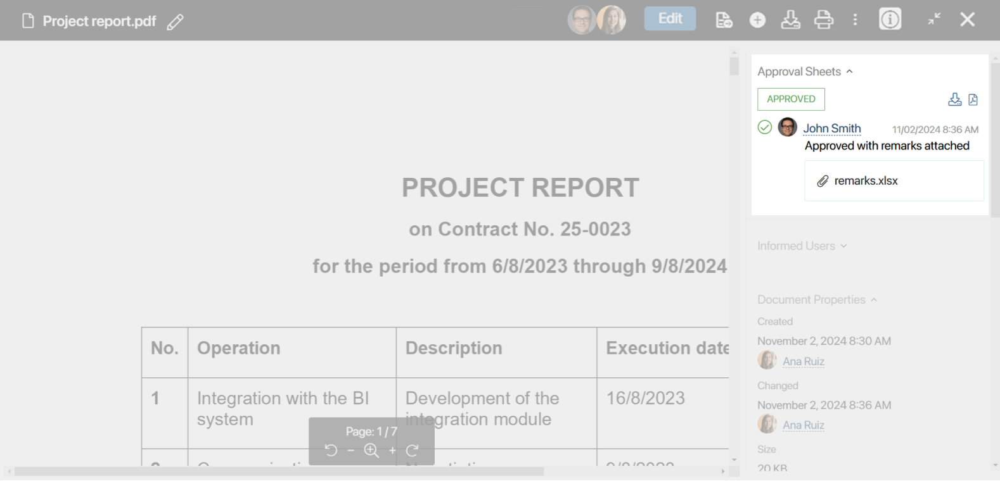
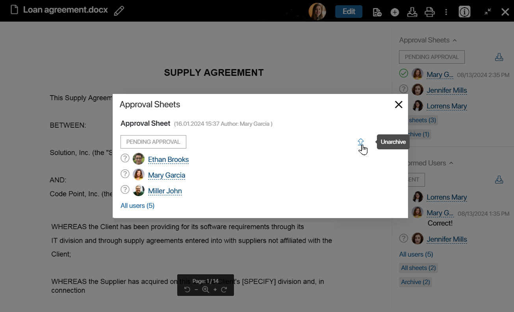

You can send a file to other users for information or approval. For example, you may need the employees to review instructions and internal orders, or a manager to approve a statement of work or presentation.
You can send a file to several colleagues at once. Each of them will be tasked with reviewing or approving the document. A list of informed users or an approval sheet will be automatically generated on the file page, where the decisions of all users will be displayed.
Please note that a certain version of the file is sent for information or approval. If any employee adds a new version of the file before the process is complete, it will be interrupted. All participants will be notified and the list of informed users or approval sheet will be archived.
After all employees have completed the task, you can add a new version of the file and send it for information or approval again.
Information
To send a file for information, follow these steps:
- At the top of the page, click the icon and select For information.
- In the opened window, fill in the fields:

- Recipients. You can specify several people as recipients at once. To do this, click the magnifying glass icon and select users from the list or start typing a name in the search field.
- Assign a task and create a list of informed users. The selected users will receive a new review task in My tasks, and a List of informed users will appear in the panel to the right of the file. By default, this option is enabled. If you deselect this option, the selected users will receive a notification containing a link to the file in the #Activity stream. The list of informed users will not be generated.
- View before. You can set a deadline by specifying a date and time. Then the assigned task will appear in the performer’s calendar if the option to create an event is enabled in their profile.
- Comment. Specify additional information about the file or task.
- Next, click Send.
Performers will be notified about the task in their #Activity stream.
To the right of the file in the List of informed users, the performers who have been tasked to review the file are displayed. Until the employee completes the task, a question mark is displayed next to their name. When reviewing the file, the user can leave a comment and attach a file. These data will be added to the list of informed users.

If a document is sent for information to a large number of employees, you can quickly view the list of users who have not yet completed the task. To do this, click the All users link and filter the lists.

You can download the list of informed users to your computer by clicking the following icons:
- The icon for the .xlsx file.
- The
 icon for the .pdf file.
icon for the .pdf file.
Approval
- Click the icon and select For approval.
- In the opened window, select the approver, specify the date by which the document should be reviewed, and click Send.
If the document will be reviewed by several people, you need to set the logic of approvals.

- Select the approval type:
- Parallel. The file is sent simultaneously to all employees specified in the Approvers* field. Select this option if the approval sequence is not important.
- Sequential. The file is sent for review first to one employee, and after they make a decision, it is sent to another employee. The approval process will not move forward until the first employee approves or rejects the file.
начало внимание
The employees receive the file for review in the sequence in which the Approvers* field was filled out.
конец внимание
- Define the behavior of the system when the first rejection occurs:
- Interrupt. After someone does not approve the file, the process will be interrupted and a Rejected resolution will appear on the document or app item.
- Continue. Even if someone on staff does not approve the file, the process will continue, but a Rejected resolution will still be issued.
- Specify the date by which the approval task needs to be completed.
- After setting up the approval logic, click Send.
After that:
- A notification will be sent to the #Activity stream of all approvers that a task has been assigned.
- The approver will receive an email notification about the task if the option to approve via email is enabled in their profile. In the email, they will be able to review the document and make a decision without going to BRIX.
- An assigned task will be displayed in the approver’s calendar if it has a limited deadline and the option to create an event is enabled in the user profile.
Once the task is set, the Approval Sheet section will appear on the right panel of the file preview page. In it, you will see a list of people reviewing the file and their resolutions. If the user leaves a comment or attaches a file during the approval, they will also be displayed in the sheet. Until an employee makes a decision, a question mark icon will be displayed next to their name.
If a document is sent for approval to a large number of employees, you can open the list of users and filter it by resolution. To do this, click the All users link.
When the file approval process is complete, you will see the final decision in the panel on the right.

You can download the approval sheet to your computer. To do this, to the right of the resolution, click:
- The icon for the .xlsx file.
- The icon for the .pdf file.
Archive of lists of informed users and approval sheets
A certain version of a file is sent for information or approval. When one of the employees adds a new version, the current list of informed users or approval sheet is archived. The archive is available to all users and is displayed in the panel to the right of the file.
Users with access rights to edit a file can restore the approval sheets from the archive. Let’s look at an example of when this might be needed.
An employee sends a file for approval. The approver reviews it and adds comments, and then uploads a new version. In this case, the sheet will go to the Archive. To complete the approval, you need to unarchive the sheet and then make a decision. Otherwise, when trying to complete the task, the approver will see a message about the interrupted process. The sheet will display the Rejected status.
To make a sheet active, select Archive to the right of the file and click the arrow icon next to the sheet name. You can then finalize the approval and complete the task.

Found a typo? Select it and press Ctrl+Enter to send us feedback